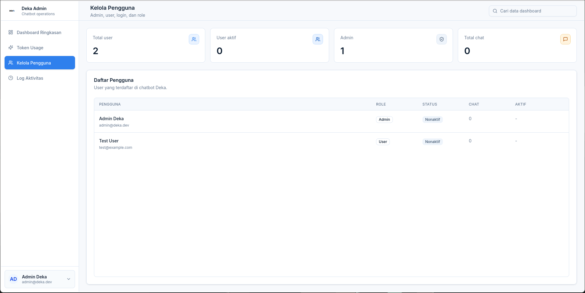
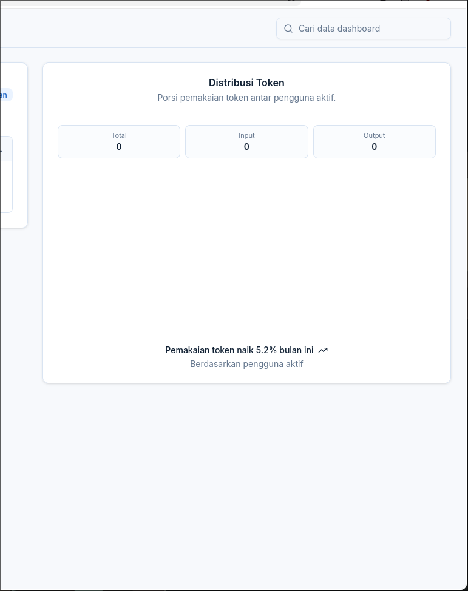

Lanjutan Progres Frontend
Dokumen ini melanjutkan laporan frontend sebelumnya dengan progres terbaru pada area admin dashboard, khususnya Kelola Pengguna, menu settings admin, dan perbaikan tampilan chart saat data masih kosong.
Sidebar, header, metric cards, chart, dan tabel admin sudah dipakai sebagai area kerja utama.
Admin dapat menambah, mengubah, dan menghapus pengguna dari section Kelola Pengguna.
Distribusi token menampilkan empty state saat belum ada pemakaian token.
Dropdown profile admin dipertahankan seperti pola user menu dan item Settings membuka modal pengaturan akun.
Tabel daftar pengguna dilengkapi tombol tambah, aksi edit, aksi hapus, dan kolom aksi yang konsisten.
Form reusable dipakai untuk tambah dan edit, lengkap dengan validasi error dari backend.
Area chart diganti dengan pesan kosong saat total token masih 0 agar dashboard tidak terlihat blank.
| Area | Status | Keterangan |
|---|---|---|
| Tambah pengguna | Selesai | Admin bisa membuat akun user atau admin baru melalui modal di dashboard. |
| Edit pengguna | Selesai | Data nama, email, role, dan password dapat diperbarui dari tabel pengguna. |
| Hapus pengguna | Selesai | Aksi hapus tersedia per baris dengan konfirmasi dan proteksi akun admin. |
| Settings admin | Selesai | Dropdown profile admin membuka settings modal yang sama dengan user area. |
| Distribusi token | Selesai dasar | Chart menampilkan empty state saat belum ada token, lalu otomatis menjadi pie chart saat data tersedia. |

Gambar 8. Section Kelola Pengguna pada admin dashboard berisi metric user, daftar pengguna, role, status, total chat, aktivitas terakhir, dan area aksi CRUD.

Gambar 9. Area Distribusi Token diperbaiki agar tidak terlihat kosong saat belum ada data token. Empty state menjelaskan bahwa data akan muncul setelah percakapan tersimpan dengan pemakaian token.